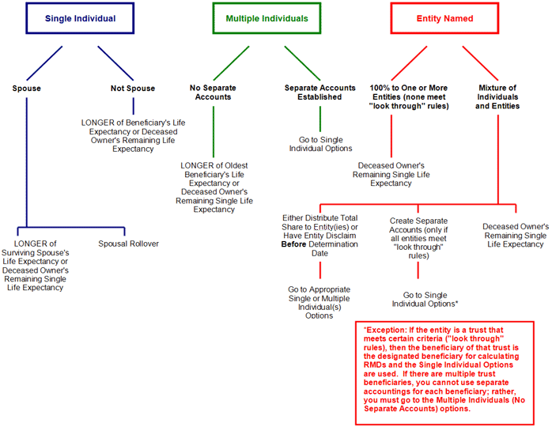

The following chart provides an overview of the options available when the IRA owner dies after reaching the Required Beginning Date:
Distribution Options for Death ON or AFTER the Required Beginning Date

In any situation, the RMD for the year in which the IRA owner died is still due. The beneficiary must make that distribution before December 31 in the year of the death if the deceased owner had not already made the distribution for that year prior to death.